Zusammenfassung Monetäre Ökonomik#
Teilgebiet der Volkswirtschaftslehre, welches sich mit der Theorie des Geldes auseinandersetzt
Zinsen#
Allgemein#
Zinsen: Preis für das Leihen / Verleihen von Geld
beispielsweise auf Kredit, der in der Zukunft zurückgezahlt werden muss
Anleiheinstrumente#
einfacher Kredit: vollständig am Anfang Auszahlung, vollständige Rückzahlung Ende + Zinsen
Ratenkredit: vollständige Auszahlung Anfang, Abstotterung mit Teilzahlungen über Zeit
festverzinslichtes Wertpapier:
vollständige Auszahlung Anfang
Kuponzahlungen zwischendurch
vollständige Rückzahlung Ende
Nullkuponanleihe: Teilauszahlung Anfang, Vollauszahlung Ende
Effektivzins#
Gegenwartswert einer zukünftigen Zahlung (Cashflow CF) mit Zins i
Effektivzins (Standard)
Effektivzins Wertpapier:
Rechenbeispiel#
Staatsanleihe (festverzinslichtes Wertpapier)
Preis P |
Rückzahlung F |
Kupon C |
Perioden n |
|---|---|---|---|
1000 |
1000 |
100 |
2 |
=> sinkt der Preis, steigt der Effektivzins!
Ertrag und Rendite#
berücksichtigt neben Zins die Preisveränderung eines Wertpapiers, bspw. für vorzeitigen Verkauf
Rendite = Ertrag / Preis
Rechenbeispiel#
Kauf und Verkauf einer Staatsanleihe in darauffolgender Periode
C |
F |
n |
|---|---|---|
100 |
1000 |
1 |
Zinsunterschied von Periode 1 zu Periode 2:
Veränderung des gesamtwirtschaftlichen Zinsniveaus
das sind Opportunitätskosten der Staatsanleihe
Kauf Periode 1: |
Verkauf Periode 2: |
Verkauf Periode 3 |
|---|---|---|
\(i_1 = 0.1\) |
\(i_2 = 0.2\) |
mit Zins wie 2: \(i_2=0.2\) |
\(P= \frac{100+1000}{(1+0.1)}\) |
\(P= \frac{100+1000}{(1+0.2)}\) |
\(P = \frac{100}{(1+0.2)}+\frac{100+1000}{(1+0.2)^2}\) |
\(P=1000\) |
\(P=917\) |
\(P=847\) |
Rendite bei Verkauf in Periode 2
Rendite bei Verkauf in Periode 3 $\( R = \frac{100+(847-1000)}{1000} = -0.053 \)$
Statt bei Beibehaltung des ursprünglichen Niveaus:
Verkauf jeweils 1000€
\(R=100/1000=0.1\)
=> Veräderung des Zinses = Veränderung des Preises
=> je länger die Laufzeit, desto größer das Risiko!
Realzins#
inflationsbereinigter Effektivzins (nach Fischer)
Investoren wollen gleichbleibenden Zins
bei Inflationsanstieg werden dann höhere Effektivzinsen verlangt
=> ein Anstieg der Inflation(serwartung) führt zu sinkenden Preisen
Zinsmarkt#
Zinsbildung im Gleichgewicht#
von Angebot und Nachfrage auf Markt für Anleihen
Nachfrage: Anleihepreis niedrig = hohe Zinsen = hohe Nachfrage
Angebot: Anleihepreis niedrig = hohe Zinsen = wenig Angebot / Emissionen
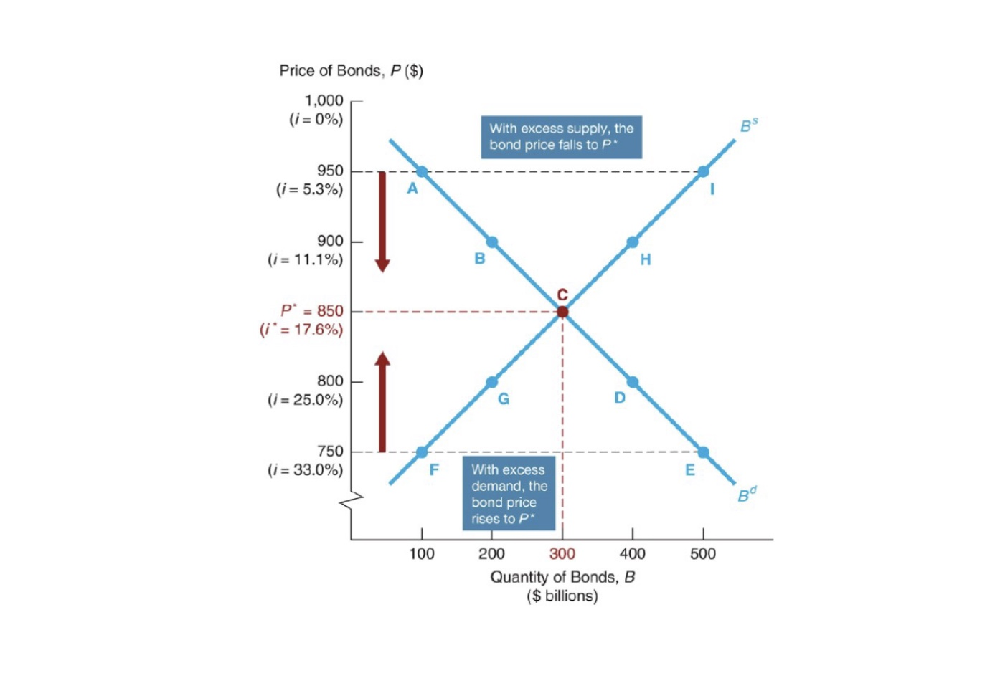
Kurvenverschiebungen#
Nachfrage |
Angebot |
|---|---|
Vermögen steigt: \(D \rightarrow\) |
Profit des Emittenten steigt: \(S \rightarrow\) |
Liquidität Anleihe steigt: \(D \rightarrow\) |
Inflation steigt: \(S \rightarrow \) |
Risiko Anleihe steigt: \(D \leftarrow\) |
Konjunktur: \(S \rightarrow\) |
Inflation steigt: \(D \leftarrow\) |
Inflation: doppelte entgegengesetzte Verschiebung!
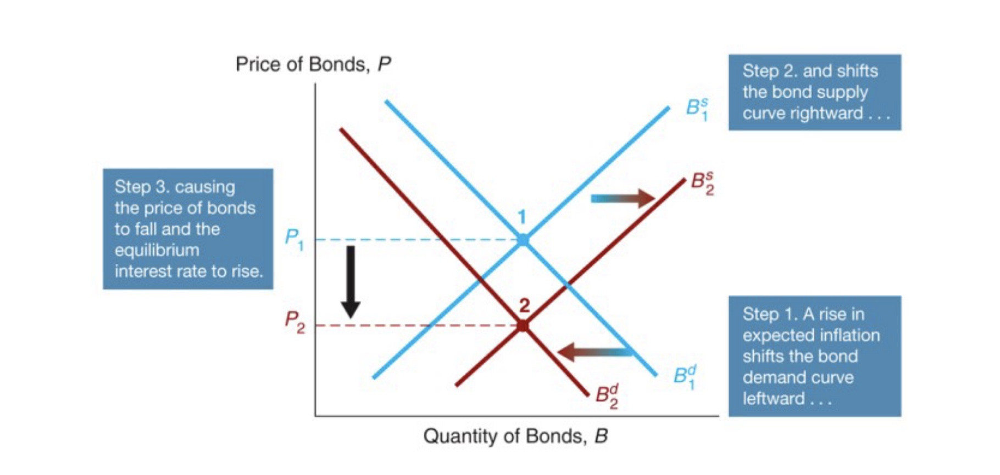
Zins und Ausfallrisiko#
Ausfallrisiko bestimmt Preis / Zins (höheres Risiko = höherer Zins)
versicherbar mit Credit Default Swaps
effektive Verzinsung = risikoloser Zinssatz + Risikozulage
Risikobewertung von Ratingagenturen (S&P, Moody, …)
Rang |
Investment Grade |
Speculative Grade |
||||
|---|---|---|---|---|---|---|
Fitch |
AAA |
AA |
A |
BBB |
BB |
… |
Moodys |
Aaa |
Aa |
A |
Baa |
Ba |
… |
Investment Grade etc. relevant für institutionelle Investoren
Krisen#
Risiko von Unternehmensanleihen steigt (Pleite)
Preise sinken = Zinsen steigen
freigewordene Reserven = in sichere Staatsanleihen
Zinsen sinken für diese
=> in Krisen steigt Zinsdifferenz zw. Unternehmens- und Staatsanleihen
Zins und Laufzeit#
Zinshöhe ist abhängig von Laufzeit
kurze Laufzeit = geringer, da weniger Risiko von Inflation etc.
längere Laufzeit = stärker, da höheres Risiko
Darstellung mit Zinsstrukturkurve
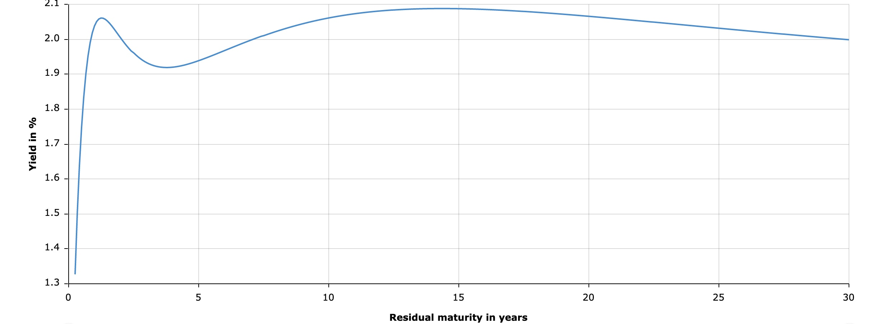
in der Regel steigend
Zinsen unterschiedlicher Laufzeiten bewegen sich ähnlich
Warum?
Erwartungstheorie#
Annahme: Investoren indifferent zwischen zwei Anleihen unterschiedlicher Laufzeiten
ob Anleihe mit Laufzeit 2 Jahre
oder 2 Anleihen nacheinander mit Laufzeit 1 Jahr
Erklärung Zins: \(i_{n,t\text{ =Laufzeit, Emissionsjahr}}^{e \text{ =Erwartung}}\)
=> langfr. Zins hängt ab von Erwartungen von kurzfr. Zins!
aber kann Anstieg der Kurve nicht erklären!
Liquiditätsprämientheorie#
Annahme: Investoren mögen Sicherheit
kurzfristige Anlagen eher als langfristige
Addition extra Prämie
steigt mit Laufzeit
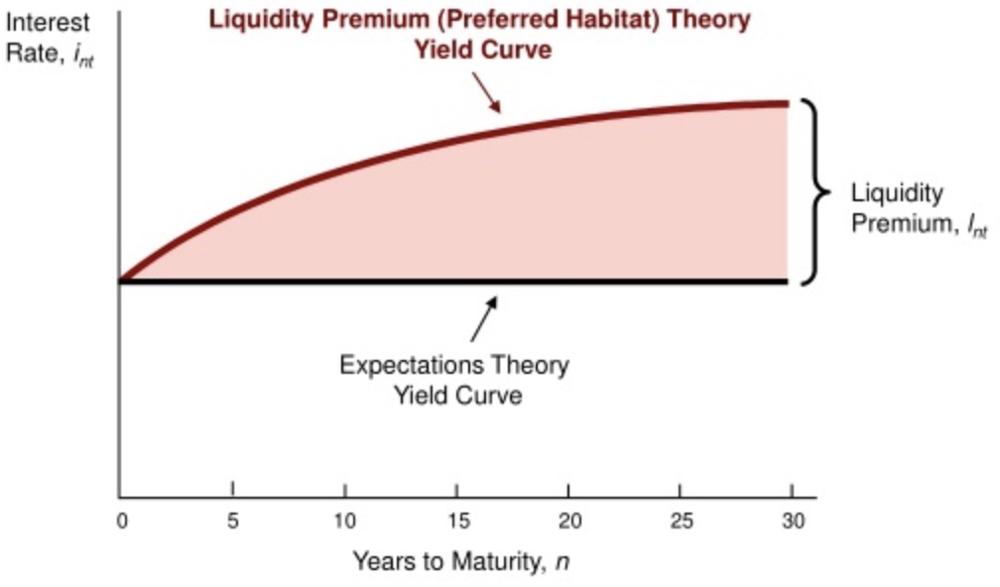
erklärt Anstieg der ZSK-Kurve
=> langfr. Zins abhängig von kurzfr. Zins und Liquiditätspremium
Finanzmarkt#
Unterteilung#
Unterteilung |
Erklärung |
|---|---|
Anleihemartk | Aktienmarkt |
Fremdkapital geben vs. Eigentümer werden |
Primärm. | Sekundärm. |
Neuausgabe vs. Handel mit bestehendem |
Geldm. | Kapitalm. |
kurzfristig (<1Jahr) vs. Langfristig |
Instrumente#
Geldmarktinstrumente |
Kapitalmarktinstrumente |
|---|---|
Schatzwechsel / Bankwechsel |
Aktien |
Unternehmenseinlagen |
Hypotheken |
Geldmarktpapiere |
Anleihen (privat + staatlich) |
Außerdem Repos
Repo (repurchase operation): kurzfristige Verkauf von Geld gegen Anleihen, mit Rückkaufvereinbarung (meist nächster Tag)
also quasi besichert (mit den anleihepapieren)
Finanzintermediäre#
Organisationen wie Banken, die Handel organisieren
Vorteile:
Bündelung Transaktionen (Reduzierung Transaktionskosten)
Expertise
Diversifikation
Überkommen von asymmetrischen informationen
adverse Selektion (ex ante)
Moral Hazard (ex post)
=> Finanzintermediäre sind „gut“
Geschäftsbanken#
Intermediär mit starker staatlicher Überwachung
Bilanz einer Geschäftsbank
Aktiva |
Passiva |
|---|---|
Langfristige Forderungen |
kruzfristige Verbindlichkeiten |
bspw. Kredite |
bspw. Sichteinlagen auf Konten |
Problem: Gefahr eines Bankruns
alle wollen ihre kurzfristigen Verbindlichkeiten
Bank hat nicht genug Reserven und kann nicht auszahlen
Lösung: Liquiditätsmanagement
Beschaffung auf Interbankenmarkt
Verkauf von Aktiva
kurzfristiger Kredit bei Zentralbank (präferiert)
=> Banken haben Angst vor Bankruns, deswegen Reserveanforderungen etc.
Zentralbanken#
übergeordnete Behörde mit alleinigem Recht der Geldschöpfung und Kontrolle des Geldmarktes
Ziele#
Preisstabilität
Informationsgehalt der Preise
Stabilität Investments
geringe Unsicherheit
Stopp kalter Progression
Stopp Umverteilung Leiher zu Schuldner
Vollbeschäftigung (FED)
Umweltschutz (sekundär)
Vergleich EZB vs FED#
EZB |
FED |
|
|---|---|---|
Name |
„Euopäische Zentralbank“ |
„Federal Reserve System“ |
Teilnehemr |
19 Zentralbanken der Eurostaaten |
12 regionale Banken |
Entscheidungsgremium |
EZB-Rat (Governing Council) |
Federal Open Markets Comitee |
Umsetzungsgremium |
Direktorium (Executive Council) |
Board of Governors |
Zielrate |
ESTER (European Short Term Rate) |
Federal Funds Rate |
Unabhängigkeit |
:white_check_mark: |
:white_check_mark: |
Warum Unabhängigkeit?
Geldpolitik basiert auf Glaubwürdigkeit
Unabhängigkeit sichert Glaubwürdigkeit
=> Glaubwürdigkeit ist schwer zu erlangen, aber einfach zu verspielen
Mittel#
konventionelle Geldpolitik:
Setzung der Zinsrate
Mindestreserveanforderungen
Einlagen der Banken bei der ZB
Kreditfazilitäten
Kredite der ZB an Geschäftsbanken
unkonventionelle Geldpolitik: quantitative Lockerung
Anleiheankaufprogramme
bspw. PEPP (Pandemic Emergency Purchase Programm) der EZB
Philipps Kurve#
Zusammenhang zwischen Inflation und Arbeitslosigkeit
Annahmen:
Preise der Firmen = Lohnkosten + x
Preisanstieg also auch
Arbeitslosigkeit = Maß für Spannung am Arbeitsmarkt
mehr Arbeitslose = schwer Lohnfrderungen durchzusetzen
also negativer Zusammenhang:
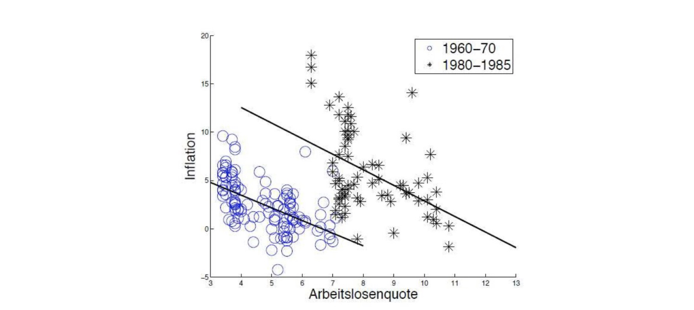
Höhe der Kurve verschiebbar (Stagflation)
Geldpolitik also keine Reallohnzuwächse, nur Nominal
zu laxe Politik = Inflationstreibend
Wirkkanal:
=> Zins hängt über Inflation mit Arbeitslosigkeit zusammen
Aber:
es ist nicht zwingend ein Tradeoff
und rückwärts nicht möglich: Inflation steigern für niedrigere ALQ
Zentralbanken in Krisen#
Aufgabe: Lender of Last Resort
Bereitstellung Liquidität für Geschäftsbanken
Bank Runs auf solide Banken verhindern
Zusammenbruch des Finanzmarktes stoppen
Mittel:
Kreditfazilitäten für alle
Zinssenkung
Offenmarktgeschäfte / Quantitative Lockerung
Zinssätze der Zentralbanken#
\(i\) = overnight interbank interest Rate
Satz, zu dem sich Banken gegenseitig leihen sollen
zentrale Rolle in gesamter Volkswirtschaft
\(i_d\) = deposit rate für Einlagen bei ZB
\(i_l\) = lending rate für Kredite von ZB
normalerweise: \(i_l < i < i_d\)
Reservemarkt#
wie ist die Nachfrage / Angebot von Reserven der Zentralbank?
entscheidend ist der Zins auf dem Interbankenmarkt!
Gut = Reservenscheine von der Zentralbank (quasi die 10€ Scheine)
Nachfrage |
Angebot |
|---|---|
„will ich an Zentralbank verleihen?“ |
„will ich von Zentralbank leihen?“ |
zu Zinssatz \(i_d\) |
zu Zinssatz \(i_l\) |
wenn Verleihen auf IB-Markt profitabler = wenig Nachfrage |
wenn Leihen auf IB-Markt billiger = kein Angebot |
wenn \(i \le i_l\) = unendliche Nachfrage |
wenn \(i \ge i_d\) = unendliches Angebot von ZB |
Mindestmenge = Reserveanforderungen |
Mindestmenge = Non Borrowed Reserves aus Offenmarktop. |
Merke: y-Achse = Zinssatz auf IB-Markt! (also Opportunitätskosten)
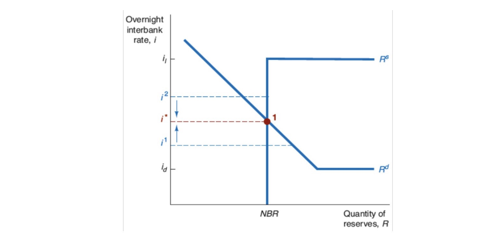
Treffpunkt: \(i^*\) = realisierter Zins auf IB-Markt
Werkzeuge auf Reservemarkt#
Offenmarktgeschäfte#
Zentralbank kauft Anleihen = mehr Angebot an Reserven
aber Non-Borrowed Reserves!
Angebotskurve verschiebt sich nach Rechts
niedrigerer Schnittpunkt = niedrigerer Zins
außer wenn Angebotskurve schon auf horizontaler Nachfragekurve ist!
Situation 1 mit Wirkung |
Situation 2 ohne Wirkung |
|---|---|
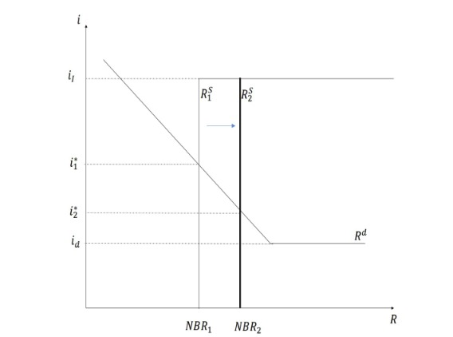 |
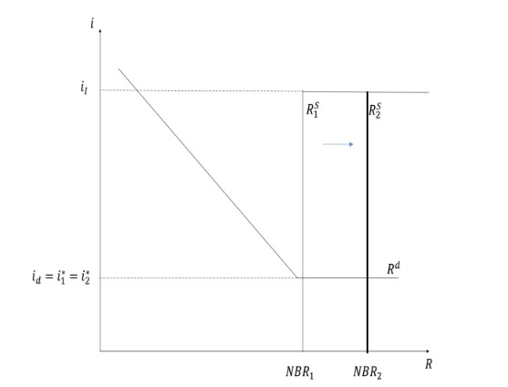 |
Senkung Spitzenrefinanzierungssatz \(i_l\)#
keine Reaktion, da Gleichgewicht nicht berührt
außer wenn \(i_l = i\)
Situation 1 (ohne Wirkung) |
Situation 2 (mit Wirkung) |
|---|---|
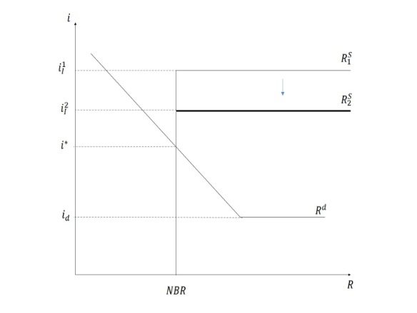 |
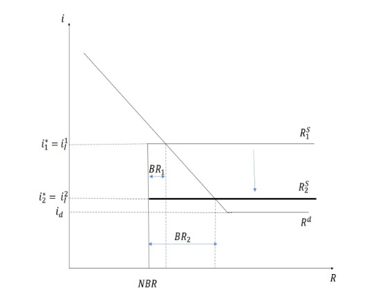 |
Senkung Depositsatz \(i_d\)#
keine Wirkung, da Gleichgewicht nicht berührt
außer wenn \(i_d = i^*\)
Situation 1 (ohne Wirkung) |
Situation 2 (mit Wirkung) |
|---|---|
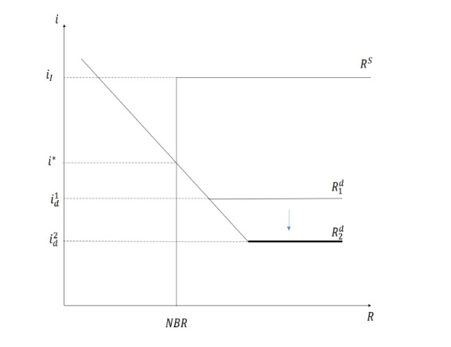 |
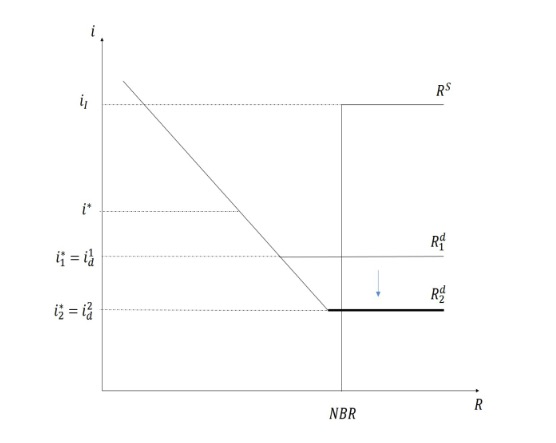 |
Mindestreserveanforderung Erhöhung#
erhöht Nachfrage nach rechts
höherer IB-Zins
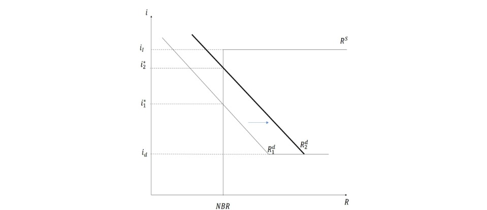
Zinssetzung#
Zentralbank kann:
Zinssätze setzen
oder Geldmenge kontrollieren
eines geht nciht bei anderem!
meisten Zentralbanken präferieren Zinssetzung!
=> Zentralbanken können entweder Zins setzen oder Geldmenge kontrollieren
Transmissionskanäle#
wie wirkt die Geldpolitik der Zentralbank? hier am Beispiel einer Zinssenkung
Zinskanal
aus Fischer Gleichung: Realzins = Nominal - Inflationserwartungen
Einfluss auf Nominalzins =
reiner ZinskanalErwartungen veinflussen =
Erwartungskanal
Vermögenswertkanal
Wechselkurskanalweniger Inv. aus Ausland + Abfluss Geld ins Ausland
nachfrage Währung sinkt = Abwertung
Billigere Exporte + Importsubstitution = mehr BIP!
Tobins qGeldmengenausweitung auf Kapitalmarkt
Unternehmen einfacher Anleihen ausgeben
merh Investitionen = mehr BIP!
reiner WertkanalVermögenspreisanstieg = mehr Einkommen
mehr Konsum = mehr BIP!
Kreditkanal
BankkreditkanalBanken bekommen mehr Reserven = mehr Spielraum
mehr Kredite = mehr Inv. = mehr BIP
BilanzkanalUnternehmenswerte = mehr wert = bessere Sicherheit
einfacher Kredite = mehr BIP
=> Zinssenkung führt zu mehr BIP und höheren Preisen und vice-versa
Geld#
Funktion#
Tauschmittel
allgemeine Akzeptanz
senkt Transaktionskosten
Recheneinheit
Wertaufbewahrung
Definitionen#
von Geld und Geldmengen
M1: Währung (Papier) + Sichteinlagen (Girokonten)
M2: M1 + Termineinlagen < 2 J + Spareinlagen < 3 J
M3: M2 + Geldmarktinstrumente < 1 J + Schuldverschreibungen < 2 J
also: \(\text{Währung} \neq \text{Geld} \neq \text{Vermögen}\)
=> je breiter die Definition, desto größer die Menge
Geldschöpfung Modell 1#
die Fractional Reserve Theory: Banken vermitteln Kredite
Zentralbank kauft Anleihe von Bank A für 100.000€
Bank hinterlegt 10% als Reserven, verleiht 90% weiter an Kunde
dieser nimmt mit zu anderer Bank etc, dort weiterverliehen etc.
Bilanz der Zentralbank
Aktiva |
Passiva |
|---|---|
Anleihen +100k€ |
Reserven +100k€ |
Bilanz der Bank A
Aktiva |
Passiva |
|---|---|
Reserven +100 |
|
Anleihen -100 |
Prozess vervielfältigen, dann wird Geldmenge mit Multipliaktor vervielfacht
Rechnung |
Visualisierung |
|---|---|
$\(\Delta Geldmenge = Multipliaktor \times \Delta Geldbasis \\Multiplikator = \frac{1}{Reserveanforderung}\)$ |
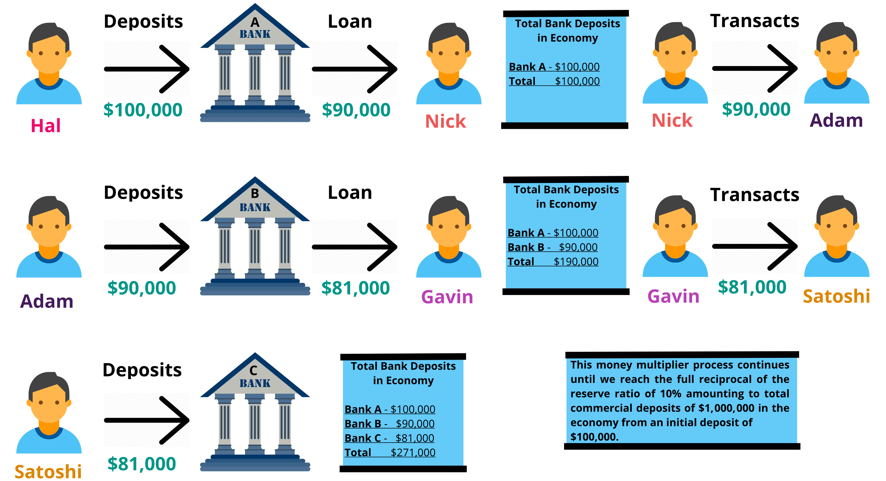 |
erklärt nicht den Wachstum der Kreditmenge vor Finanzkrisen!
Widerspruch mit Zins als das primäre Politikinstrument
Geldschöpfung Modell 2#
die Bankenschöpfungtheorie: Banken erschaffen Geld
Bank vergibt Kredit über Bilanzverlängerung
Sichteinlagen an Investor A
der zieht das Geld ab, andere bringen es rein
wenn Reserveanforderung nicht erfüllt -> IB-Markt
im Aufschwung:
alle Banken vergeben Kredite aufgrund guter Aussichten
alle brauchen Reserven = Zinsen steigen auf IB-Markt
ZB will stabilen Zins = mehr Offenmakrtgeschäfte etc
im Abschwung:
Kreditrisiko erhöht sich
alle Banken wollen Reserven für kurzfristige Liquidität
Kreditblase kann platzen = Kollaps
=> Banken erschaffen Geld
Finanzinnovation#
statt alter Kreditvergabe neue Arten
altes Modell |
neues Modell |
|---|---|
Kreditvergabe gegen physische Sicherheit |
Kreditvergabe gegen Wertpapiere |
Gewinn aus Zinsen |
Gewinn aus Weiterverkauf der Forderungen |
sorgfältige Auswahl Kreditnehmer |
wenig Auswahl und Checks |
originitate-to-hold |
originate-to-distribute |
Verbriefung#
Securization / Verbriefung: Portfolioerstellung aus Einzelpositionen zur Risikostreuung
Mischung von Krediten zu einer Assetklasse
Kombinieren verschiedener Risiken
Ratings von Ratingagenturen
Vorgehen:
Bank gründet Special Purpose Vehicle SPV
Verkauf aller Kredite dahin
SPV verbrieft und bündelt Kredite zu einzelnen Tranchen
verkauft an Special Investment Vehicle mit ABS
SIV verkürzt Laufzeiten und gibt Papiere aus
verkauft diese kurzfristig besicherten ABCP
Probleme:
Investoren haben keine Transparenz über Schuldner / Werte
langfristige Forderungen treffen kurzfristige Papiere
Risiko Austrocknen kurzfristiger Finanzierung = kein Lender of Last Resort
Kollaps einfach möglich
=> riskante Innovation bündelt Kredite untersch. Laufzeiten & Risiken zu explosiver Mischung
Interessantes#
Film über das Finanzsystem: Oeconomia
Spielregeln des Finanzsystems
von Carmen Losmann
frei verfügbar beim ZDF